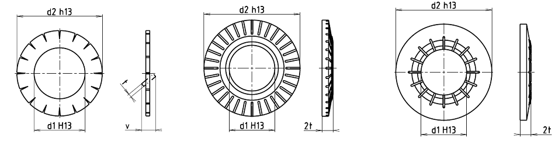

Příklad označení pozinkované ocelové ozubené podložky pod matici M16:
PODLOŽKA ČSN 02 1744.05–17
Příklad označení pozinkované ocelové vějířovité podložky s vnějším ozubením pod matici M16:
PODLOŽKA ČSN 02 1745.05–17
Příklad označení pozinkované ocelové vějířovité podložky s vnitřním ozubením pod matici M16:
PODLOŽKA ČSN 02 1746.05–17
| Matice d |
Společné rozměry | ČSN 02 1744 | ČSN 02 1745 | ČSN 02 1746 | |||
|---|---|---|---|---|---|---|---|
| d1 | d2 | t | v | Hmotnost [g] | Hmotnost [g] | Hmotnost [g] | |
| M1,6 | 1,8 | 3,8 | 0,25 ±0,025 | 0,6 | 0,012 | – | – |
| M2 | 2,2 | 4,5 | 0,3 ±0,035 | 0,6 | 0,020 | – | – |
| M2,5 | 2,8 | 5,5 | 0,3 ±0,035 | 0,6 | 0,028 | – | – |
| M3 | 3,2 | 6 | 0,3 ±0,035 | 0,7 | 0,033 | 0,029 | 0,029 |
| M3,5 | 3,7 | 7 | 0,35 ±0,035 | 0,8 | 0,053 | 0,076 | 0,076 |
| M4 | 4,3 | 8 | 0,35 ±0,035 | 1 | 0,098 | 0,098 | 0,098 |
| M5 | 5,3 | 9 | 0,6 ±0,045 | 1,3 | 0,160 | 0,196 | 0,196 |
| M6 | 6,4 | 11 | 0,7 ±0,045 | 1,5 | 0,221 | 0,345 | 0,345 |
| M8 | 8,4 | 14 | 0,8 ±0,045 | 1,9 | 0,435 | 0,618 | 0,618 |
| M10 | 10,5 | 17 | 1 ±0,055 | 2 | 0,781 | 1,1 | 1,1 |
| M12 | 12,5 | 22 | 1,2 ±0,055 | 2,6 | 1,06 | 2,33 | 2,33 |
| M14 | 15 | 22 | 1,5 ±0,065 | 3,2 | 1,60 | 3,39 | 3,39 |
| M16 | 17 | 27 | 1,5 ±0,065 | 3,8 | 2,53 | 4,07 | 4,07 |
| M18 | 19 | 32 | 1,8 ±0,085 | 3,8 | 3,16 | 7,36 | 7,36 |
| M20 | 21 | 32 | 1,8 ±0,085 | 4,0 | 4,92 | 6,47 | 6,47 |
| M22 | 23 | 36 | 2 ±0,085 | – | – | 9,46 | 9,46 |
| M24 | 25 | 36 | 2 ±0,085 | – | – | 8,27 | 8,27 |
0 ocel 11 701.20
Druhá doplňková číslice:0 bez úpravy povrchu
1 čistý povrch
2 černění
3 fosfátování
4 kadmiování
5 zinkování
6 mosazení
7 niklování
8 chromování
9 dle zvláštního ujednání